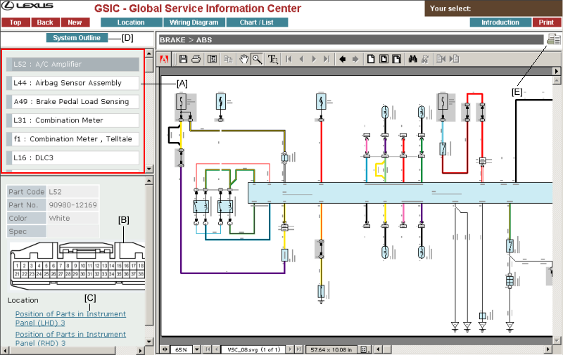
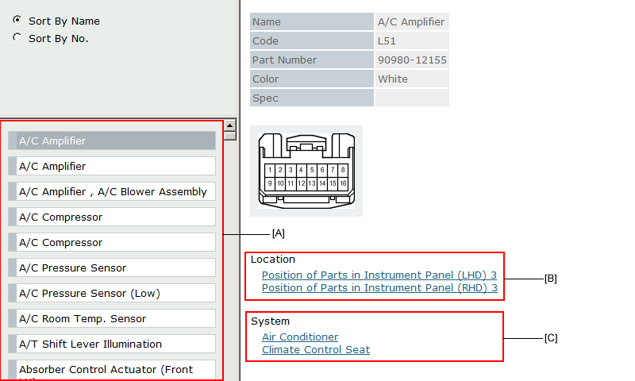
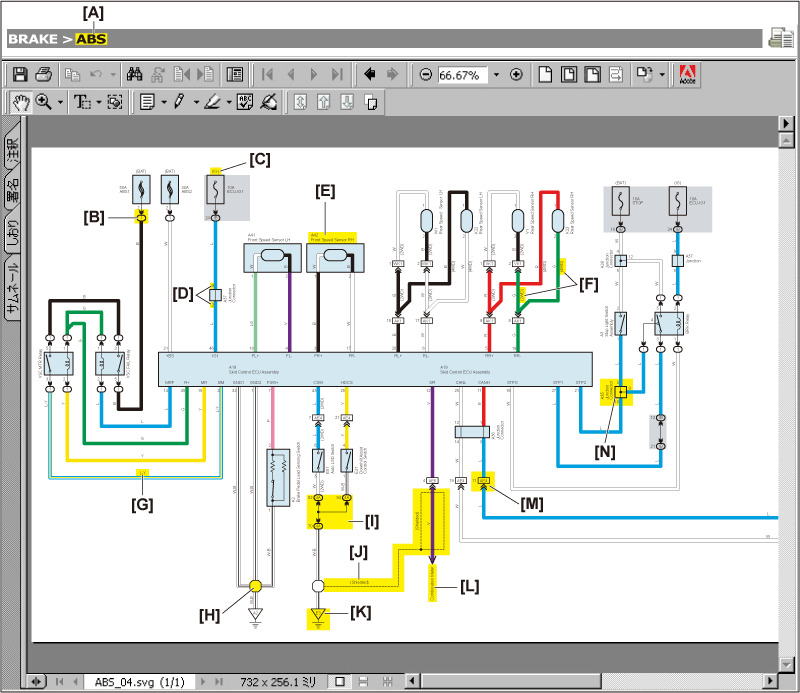
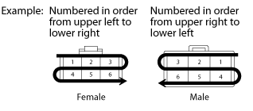
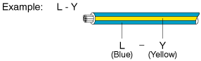
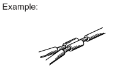
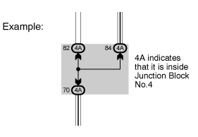
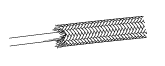
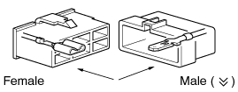
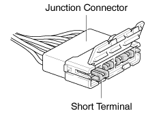

Top area of the screen is reserved for the menu selection for this web-based "EWD system."
Click one of the sections on the menu to access the data you want.
The first screen of this EWD system shows you the top menu of the System Circuit section.
| Sections | Title | Contents |
|---|---|---|
| Location |
Indicate where an ECU, relay, relay block and others are located. Indicate where a connector, ground point and others are located. |
|
| Wiring Diagram | Power Source | Show you the power source. |
| System Circuit | Show you each wiring diagram by a system. | |
| Ground Point | Show you the ground points. | |
| Overall EWD | Show you the overall wiring diagrams of a vehicle. | |
| Chart/List | Connector List | Provide the name list of all the connectors. The list allows you to view a part number, shape and some other data you want. |
| Power Source | Show you the power source. (Matrix Chart) | |
| Introduction | Introduction, Troubleshooting, Abbreviations, Glossary of terms and symbols, and Help on this EWD system are included. |
Select a proper item from the view list [A].

The name list of the parts will be displayed in the upper left of the screen if the diagram of System Circuit and Wire Routing includes symbols of the connectors.
Part code is shown on the left of the part name.
By choosing a part from the name list in [A], connector detailed data will be displayed here.
In System Circuit, the link let you go to the section where indicates a location of the connector shown above this link.
In Wire Routing, the link is cross-linked with System Circuit that indicates the wire connection of the connector shown in this frame.
System Outline information is shown on a separate screen. This button will not be displayed when selected system does not have system outline information.
By clicking this button, a system currently shown or a wiring routing will be displayed in the printable format (PDF).
This can be printed out using the "print" button in Acrobat Reader (external module).

The Parts Name will be listed here.
You can view the details like the figure, code, part number and color of the connector you selected from the name list.
Clicking this link you can access the wiring diagram that refers to the connector you have chosen.
Clicking this link you can access the system circuit that refers to the connector you have chosen.

By clicking this button, you can access information of the selected J/B, R/B.
By clicking this link, you can access information of the selected system circuit.
Display order of fuse will be changed.


B=Black W=White BR=Brown L=Blue V=Violet SB=Sky Blue R=Red G=Green LG=Light Green P=Pink Y=Yellow GR=Gray O=Orange
The first letter indicates the basic wire color and the second letter indicates the color of the stripe.





Indicates a connector which is connected to a short terminal.
 |
Junction connector in this manual include a short terminal which is connected to a number of wire harnesses. Always perform inspection with the short terminal installed. |